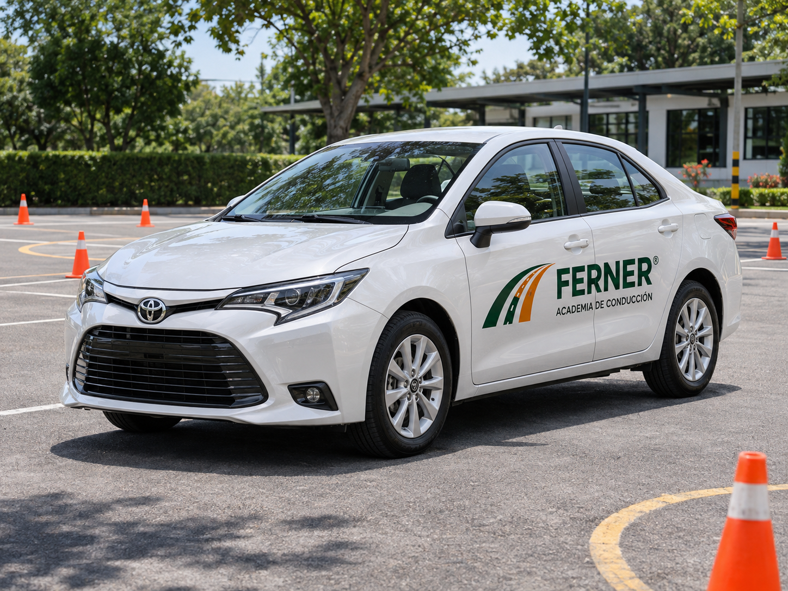
AutomóvilSedán de formación
Ideal para familiarizarse con la conducción urbana y las maniobras básicas.
Conducción
Parqueo
NUESTRA FLOTA
Una flota pensada para acompañarte en cada etapa de tu formación, con vehículos adaptados a diferentes prácticas de conducción.
Seguridad vial
Mantenimiento
Variedad de prácticas
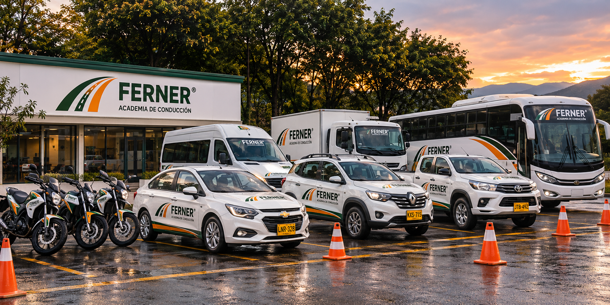
CONOCE NUESTRA FLOTA
Explora nuestra propuesta de automóviles, motocicletas y vehículos especiales para diferentes experiencias de conducción.

AutomóvilIdeal para familiarizarse con la conducción urbana y las maniobras básicas.
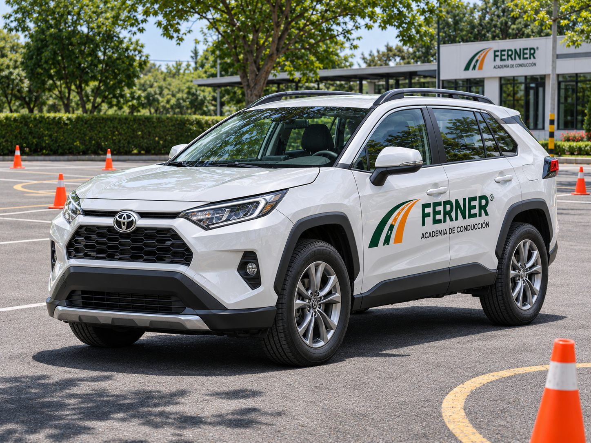
AutomóvilConoce el manejo de vehículos de mayor tamaño y desarrolla confianza al maniobrar.
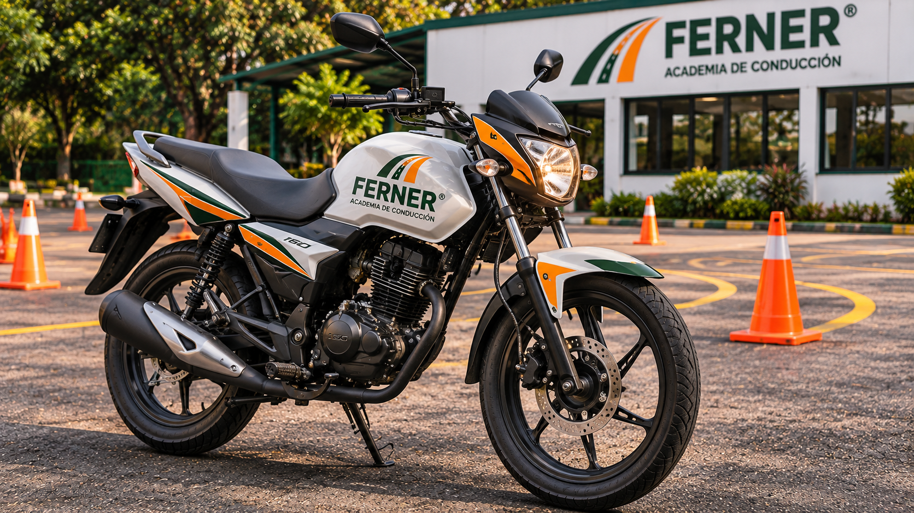
MotocicletaDesarrolla habilidades de equilibrio, coordinación y control en la conducción.
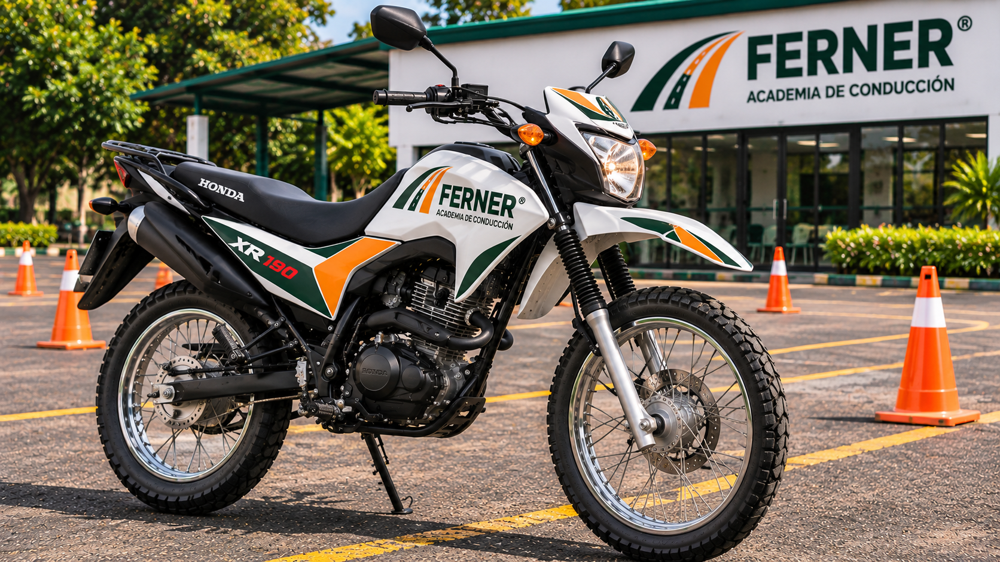
MotocicletaPractica técnicas de maniobrabilidad, estabilidad y conducción responsable.
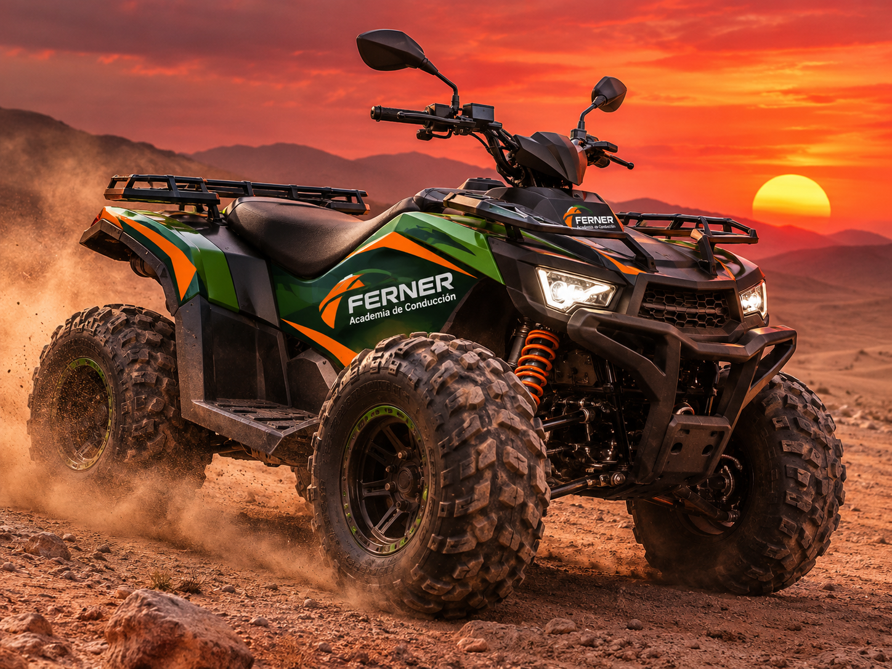
EspecialConoce las técnicas básicas de manejo, estabilidad y control en terrenos especiales.
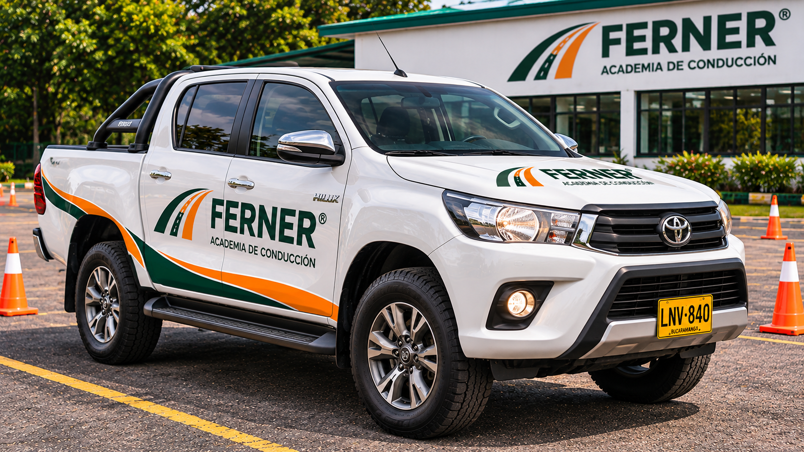
EspecialExplora técnicas de conducción y maniobra en vehículos de mayor dimensión.
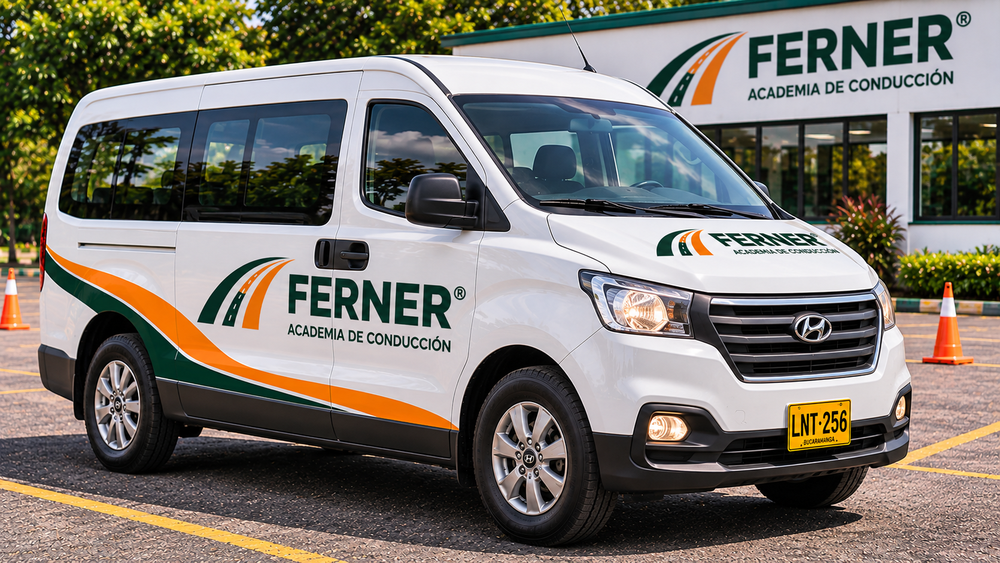
EspecialConoce las características de los vehículos destinados al transporte de pasajeros.
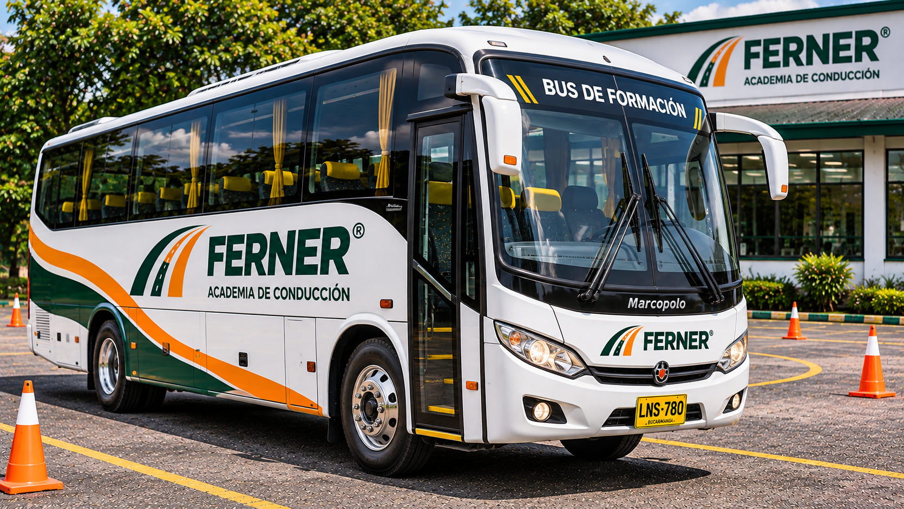
EspecialRepresentación de las prácticas especializadas de conducción de vehículos de pasajeros.
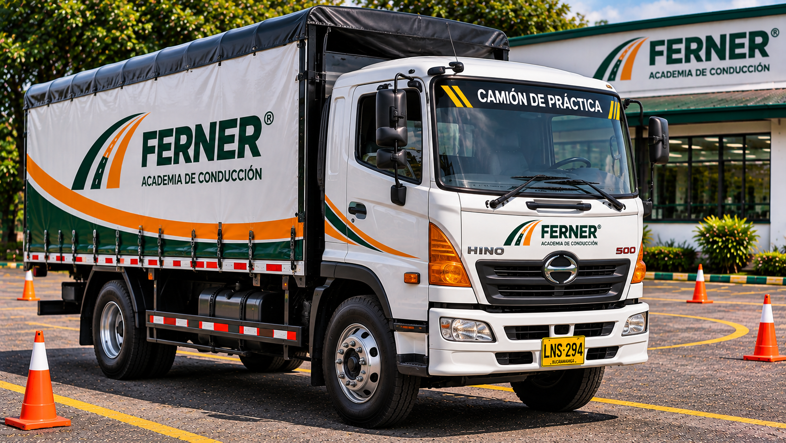
EspecialRepresentación de la formación especializada en vehículos destinados al transporte de carga.
FORMACIÓN ESPECIALIZADA
Descubre equipos para distintas labores agrícolas, industriales y de construcción. Conoce sus aplicaciones y nuestra propuesta de capacitación.
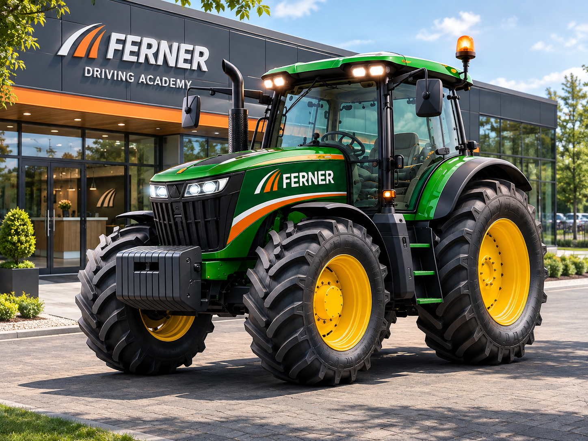
Operación y manejo de implementos.

Excavación y movimiento de tierra.

Excavación y cargue de materiales.

Manipulación y elevación de cargas.

Operación y recolección mecanizada.
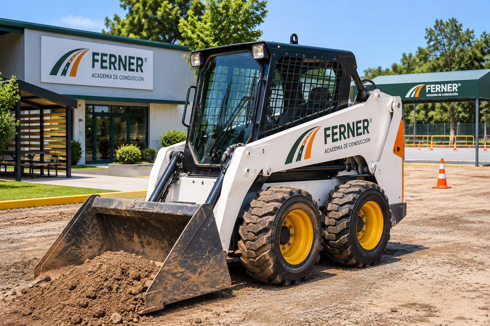
Maniobras y movimiento de materiales.

Empuje y movimiento de grandes volúmenes de tierra.

Nivelación y preparación de superficies.

Compactación de suelos y superficies viales.